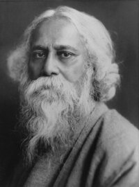
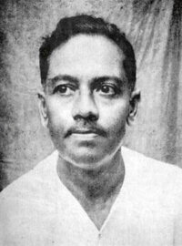
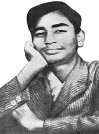
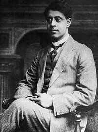

প্রশ্ন →
|
|

- রবীন্দ্রনাথ ঠাকুর
|
|
|
|
মা গো, আমায় ছুটি দিতে বল্,
সকাল থেকে পড়েছি যে মেলা।
এখন আমি তোমার ঘরে বসে
করব শুধু পড়া-পড়া খেলা।
তুমি বলছ দুপুর এখন সবে,
নাহয় যেন সত্যি হল তাই,
একদিনও কি দুপুরবেলা হলে
বিকেল হল মনে করতে নাই?
আমি তো বেশ ভাবতে পারি মনে
সুয্যি ডুবে গেছে মাঠের শেষে,
বাগ্দি-বুড়ি চুবড়ি ভরে নিয়ে
শাক তুলেছে পুকুর-ধারে এসে।
আঁধার হল মাদার-গাছের তলা,
কালি হয়ে এল দিঘির জল,
হাটের থেকে সবাই এল ফিরে,
মাঠের থেকে এল চাষির দল।
মনে কর্-না উঠল সাঁঝের তারা,
মনে কর্-না সন্ধে হল যেন।
রাতের বেলা দুপুর যদি হয়
দুপুর বেলা রাত হবে না কেন।
|
আবার আসিব ফিরে →
|
|

- জীবনানন্দ দাশ
|
|
|
|
আবার আসিব ফিরে ধানসিঁড়িটির তীরে - এই বাংলায়
হয়তো মানুষ নয় - হয়তো বা শঙখচিল শালিকের বেশে,
হয়তো ভোরের কাক হয়ে এই কার্তিঁকের নবান্নের দেশে
কুয়াশার বুকে ভেসে একদিন আসিব কাঁঠাল ছায়ায়।
হয়তো বা হাঁস হবো - কিশোরীর - ঘুঙুর রহিবে লাল পায়
সারাদিন কেটে যাবে কলমীর গন্ধভরা জলে ভেসে ভেসে।
আবার আসিব আমি বাংলার নদী মাঠ ক্ষেত ভালোবেসে
জলঙ্গীর ঢেউ এ ভেজা বাংলারি সবুজ করুণ ডাঙ্গায়।
হয়তো দেখিবে চেয়ে সুদর্শন উড়িতেছে সন্ধ্যার বাতাসে।
হয়তো শুনিবে এক লক্ষীপেঁচা ডাকিতেছে শিমুলের ডালে।
হয়তো খৈয়ের ধান সরাতেছে শিশু এক উঠানের ঘাসে।
রূপসার ঘোলা জলে হয়তো কিশোর এক সাদা ছেঁড়া পালে
ডিঙ্গা বায় - রাঙ্গা মেঘে সাঁতরায়ে অন্ধকারে আসিতেছে নীড়ে,
দেখিবে ধবল বক; আমারে পাবে তুমি ইহাদের ভীড়ে।
|
সিঁড়ি →
|
|

- সুকান্ত ভট্টাচার্য
|
|
|
|
আমরা সিঁড়ি,
তোমরা আমাদের মাড়িয়ে
প্রতিদিন অনেক উঁচুতে উঠে যাও,
তারপর ফিরেও তাকাও না পিছনের দিকে;
তোমাদের পদধূলিধন্য আমাদের বুক
পদাঘাতে ক্ষতবিক্ষত হয়ে যায় প্রতিদিন।
তোমরাও তা জানো,
তাই কার্পেটে মুড়ে রাখতে চাও আমাদের বুকের ক্ষত
ঢেকে রাখতে চাও তোমাদের অত্যাচারের চিহ্নকে
আর চেপে রাখতে চাও পৃথিবীর কাছে
তোমাদের গর্বোদ্ধত, অত্যাচারী পদধ্বনি।
তবুও আমরা জানি,
চিরকাল আর পৃথিবীর কাছে
চাপা থাকবে না।
আমাদের দেহে তোমাদের এই পদাঘাত।
আর সম্রাট হুমায়ুনের মতো
একদিন তোমাদেরও হতে পারে পদস্খলন।।
|
একটি কাফি →
|

- বিষ্ণু দে
|
|
|
|
আমারও মন চৈত্রে পলাতক,
পলাশে আর আমের ডালে ডালে
সবুজ মাঠে মাঝবয়সী লালে
দণ্ড দুই মুক্তি-সুখে জিরায়
মাটির কাছে সব মানুষ খাতক।
বিভোল মনে অবাক চেয়ে থাকে
সারা দুপুর হেলাফেলার হীরায়,
উদাস মন হাওয়ার পাকে পাকে
ঘুঘুর ডাকে গ্রামের ফাঁকা ক্ষেতে
মিলিয়ে দেয় দুস্থতার পাতক,
বিকাল তাই সন্ধ্যা-রঙে মেতে
শেষ, যে শেষ সারাদিনের পরে
একটি গানে গহন স্বাক্ষরে।
জানো কি সেই গানের আমি চাতক ?
|
আবোল তাবোল →
|
|

- সুকুমার রায়
|
|
|
|
আয়রে ভোলা খেয়াল খোলা
স্বপনদোলা নাচিয়ে আয়,
আয়রে পাগল আবোল তাবোল
মত্ত মাদল বাজিয়ে আয় ৷
আয় যেখানে ক্ষ্যাপার গানে
নাইকো মানে নাইকো সুর,
আয়রে যেথায় উধাও হাওয়ায়
মন ভেসে যায় কোন্ সুদূর |
আয় ক্ষ্যাপা–মন ঘুচিয়ে বাঁধন
জাগিয়ে নাচন তাধিন্ ধিন্,
আয় বেয়াড়া সৃষ্টিছাড়া
নিয়মহারা হিসাব–হীন ৷
আজগুবি চাল বেঠিক বেতাল
মাতবি মাতাল রঙ্গেতে,
আয়রে তবে ভুলের ভবে
অসম্ভবের ছন্দেতে ৷৷
|
শেষের কবিতা →
|
|
- রবীন্দ্রনাথ ঠাকুর
|
|
|
|
কালের যাত্রার ধ্বনি শুনিতে কি পাও।
তারি রথ নিত্যই উধাও
জাগাইছে অন্তরীক্ষে হৃদয়স্পন্দন,
চক্রে-পিষ্ট আঁধারের বক্ষফাটা তারার ক্রন্দন।
ওগো বন্ধু,
সেই ধাবমান কাল
জড়ায়ে ধরিল মোরে ফেরি তার জাল-
তুলে নিল দ্রুতরথে দুঃসাহসী
ভ্রমণের পথে
তোমা হতে বহু দূরে।
মনে হয়,
অজস্র মৃত্যুরে পার হয়ে আসিলাম আজি নবপ্রভাতের শিখরচূড়ায়-
রথের চঞ্চল বেগ হাওয়ায় উড়ায়
আমার পুরানো নাম।
ফিরিবার
পথ নাহি;
দূর হতে যদি দেখ চাহি
পারিবে না চিনিতে আমায়।
হে বন্ধু, বিদায়।
কোনোদিন কর্মহীন পূর্ণ অবকাশে বসন্তবাতাসে
অতীতের তীর হতে যে
রাত্রে বহিবে দীর্ঘশ্বাস,
ঝরা বকুলের কান্না ব্যথিবে আকাশ,
সেই ক্ষণে খুঁজে দেখো–কিছু মোর পিছে রহিল সে তোমার প্রাণের
প্রান্তে;
বিস্মৃতিপ্রদোষে হয়তো দিবে সে জ্যোতি,
হয়তো ধরিবে কভু নাম-হারা স্বপ্নের মুরতি।
তবু সে তো স্বপ্ন নয়,
সব-চেয়ে সত্য মোর,
সেই মৃত্যুঞ্জয়,
সে আমার প্রেম।
তারে আমি রাখিয়া এলেম অপরিবর্তন অর্ঘ্য তোমার উদ্দেশে।
পরিবর্তনের স্রোতে আমি যাই ভেসে
কালের যাত্রায়।
হে বন্ধু, বিদায়।
তোমার হয় নি কোনো ক্ষতি
মর্তের মৃত্তিকা মোর,
তাই দিয়ে
অমৃতমুরতি যদি সৃষ্টি করে থাক,
তাহারি আরতি হোক তব সন্ধ্যাবেলা,
পূজার সে খেলা ব্যাঘাত পাবে না মোর প্রত্যহের ম্লান স্পর্শ লেগে;
তৃষার্ত আবেগ-বেগে ভ্রষ্ট নাহি হবে তার কোনো ফুল নৈবেদ্যের
থালে।
তোমার মানস-ভোজে সযত্নে সাজালে যে ভাবরসের পাত্র বাণীর
তৃষায়,
তার সাথে দিব না মিশায়ে
যা মোর ধূলির ধন,
যা মোর চক্ষের জলে ভিজে।
আজো তুমি নিজে হয়তো-বা করিবে রচন
মোর স্মৃতিটুকু দিয়ে স্বপ্নাবিষ্ট তোমার বচন।
ভার তার
না রহিবে,
না রহিবে দায়।
হে বন্ধু, বিদায়।
মোর লাগি করিয়ো না শোক,
আমার রয়েছে কর্ম, আমার রয়েছে
বিশ্বলোক।
মোর পাত্র রিক্ত হয় নাই-
শূন্যেরে করিব পূর্ণ,
এই ব্রত বহিব সদাই। উৎকণ্ঠ আমার লাগি
কেহ যদি প্রতীক্ষিয়া থাকে
সেই ধন্য করিবে আমাকে।
শুক্লপক্ষ হতে আনি রজনীগন্ধার বৃন্তখানি যে পারে সাজাতে
অর্ঘ্যথালা কৃষ্ণপক্ষ রাতে,
যে আমারে দেখিবারে পায় অসীম ক্ষমায়
ভালো মন্দ মিলায়ে সকলি,
এবার পূজায় তারি আপনারে দিতে চাই
বলি।
তোমারে যা দিয়েছিনু তার পেয়েছ নিঃশেষ অধিকার।
হেথা মোর তিলে তিলে দান,
করুণ মুহূর্তগুলি গণ্ডূষ ভরিয়া করে
পান
হৃদয়-অঞ্জলি হতে মম।
ওগো তুমি নিরুপম,
হে ঐশ্বর্যবান,
তোমারে যা দিয়েছিনু সে তোমারি দান-
গ্রহণ করেছ যত
ঋণী তত করেছ আমায়।
হে বন্ধু, বিদায়।
|